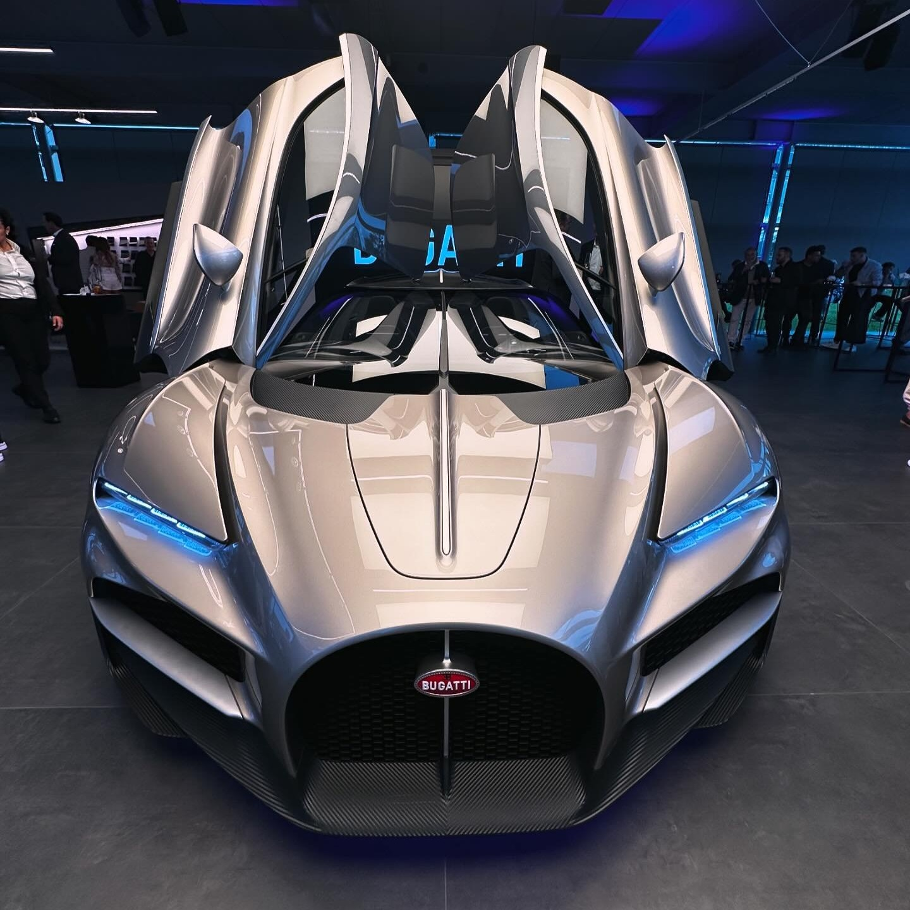
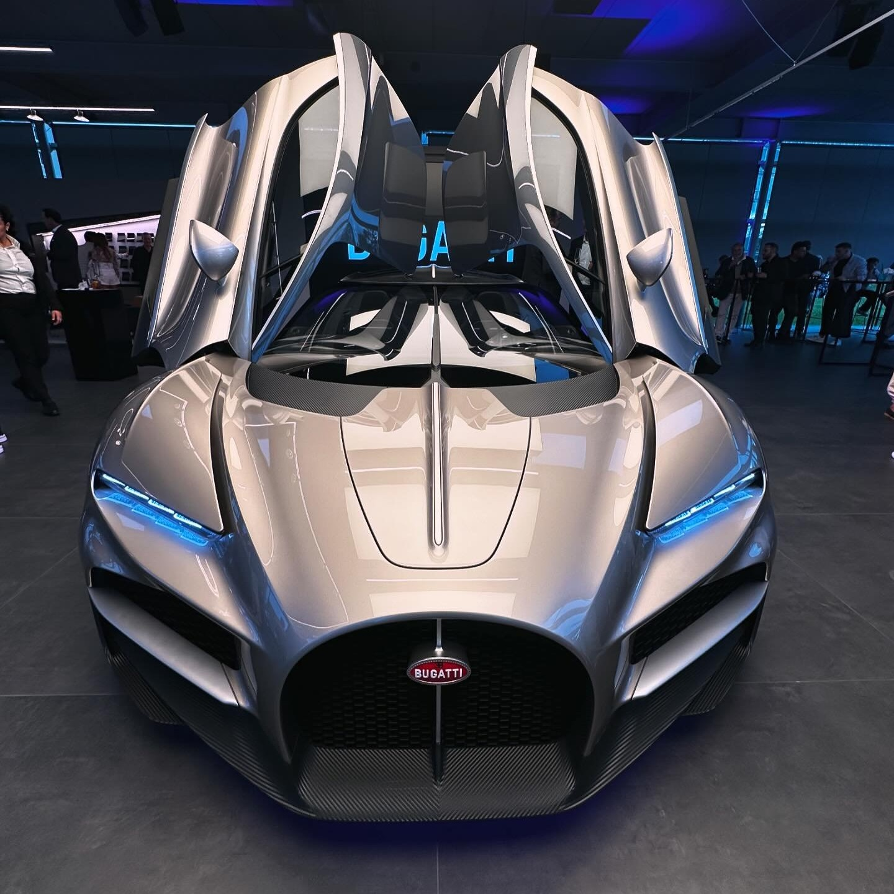

veiw this website at half screen
 

The bugatti tourbillon is a better version of his older brother the chiron.
It is the newest bugatti on this website. It came out in 2024.
This car is a first for Bugatti because this is the first production
Bugatti to have butterfly doors (as shown on the left).